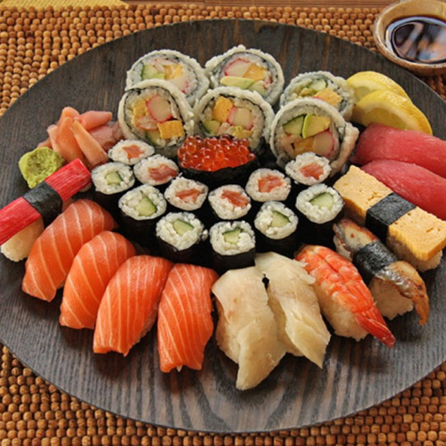

Suši ryžiai - World Recipes Suši - Sušis (suši; jap. 寿司 arba 壽司, 鮨, 鮓, 寿し, すし) – saldžiu acto mišiniu pagardinti ryžiai su termiškai neapdorotomis (žaliomis) jūros gėrybėmis (žuvimi); vieno kąsnio užkandėlė, patiekiama ...
„Rimi“ - Suši „Aš nekenčiu suši“) atstovas pasakoja, kad norint kažko nemėgti – reiškia tai betarpiškai pažinti. „Per daugybę metų kauptą patirtį mes pažinome. Todėl mūsų restorane nerasite jokio netikrumo, jokių spalvotų apgaulių – kuriame be pasiteisinimų. Tik vėsūs Šampanės burbulai, patiekalo emocija ir dėmesys svečiui ...
Sushi! | Receptas - World Recipes Skanūs ir švieži suši, karšti wok makaronai restoranų tinkle, tiekiančiame japonišką Sushi Maestro maistą į namus. Pasiimk su savimi arba užsakyk pristatymą į namus! 8 655 59 989
Meniu | Sushi Express Šviežias, ne itin termiškai apdorotas maistas išsinešimui, patiekalų pateikimo estetika ir galiausiai sveika mityba – HALKIO Sushi.
Žveryne atidarytas pirmasis šalyje prabangių suši ... Ką tu žinai apie suši?"Sushi" yra japonų gaminys, pagamintas iš ryžių, daržovių ir žalios žuvies ar kitų jūros gėrybių. Skanus patiekalas paprastai gaminamas iš tunų, lašišų, sepijos, octopod, krevečių, krabų ir ikrų. Šio unikalaus patiekalo paslaptis yra jos amžių amžius ir pusiausvyra tarp ryžių ir acto, kuris yra jo marinatas.
Sushi Maestro - restoranų tinklas, pristatantis japonų ... SUŠI RYŽIAI. Pusės kilogramo suši ryžių užteks pasigaminti apie 10 ritinėlių. 2,5 puodelio suši ryžių. 3 puodeliai vandens. 1 puodelis ryžių acto. 1/2 puodelio cukraus. 1/2 šaukštelio druskos. Pirmiausia nuplauname ryžius. Užpilame juos vandeniu ir švelniai, kad nesuniokotumėm grūdelių, skalaujame. Vandenį keičiame ...
Sužinokite daugiau apie "suši" kilmę ir jos rūšis! „Sushi Express“ greito maisto japonų restoranas. Švieži produktai, ką tik pagaminti suši. Platus asortimentas, galimybė užsisakyti iš anksto. Išsirinkite!
Suši – www.miamipizza.lt Ką tik pagaminti suši, suši rinkiniai, sriubos, koldūnai ir kiti japoniški patiekalai. Viskas tik iš šviežių produktų. Spauskite, rinkitės ir mėgaukitės!
Žveryne atidarytas pirmasis šalyje prabangių suši patiekalų restoranas - MadeinVilnius.lt - Vilniaus naujienų dienoraštis
2020.10.29 08:53

2020 spalio 29 d., Ketvirtadienis Reklama Kontaktai Pranešk naujieną English Switch skin Atsitiktinis straipsnis Prisijungti Sekite mus RSS Facebook Twitter Flickr YouTube Tumblr Instagram Vilnius 10 ℃ Meniu Ieškoti Switch skin Naujienos Miestas Rajonas Trakai Lentvaris Medininkai Širvintos Mikrorajonai Transportas Viešasis transportas Vilniaus gatvės Oro uostas Traukiniai Aktualijos Vilniečiai Oro sąlygos Švietimas Sportas Turizmas Verslas Vilniaus rinka Statybos Vilniuje Nekilnojamas turtas Technologijos Užsienio investicijos Startuoliai Pramogos Laisvalaikis Renginiai Koncertai Festivaliai Teatras Parodos Kinas Istorija Neatrastas Vilnius Vilniaus miesto studija Senasis Vilnius Maistas Sostinės geriausieji Nauja vietelė Vilniečiai rekomenduoja Maistas ant ratų Statybos RENGINIAI Lietuvos naujienos Vilniaus regionas Kauno regionas Klaipėdos regionas Šiaulių regionas Panevėžio regionas Alytaus regionas Marijampolės regionas Telšių regionas Utenos regionas Tauragės regionas Stilius MadeinVilnius.lt rašo Savaitės klausimas Knygų apžvalgos Vilniečio balsas Ieškoti Sidebar Nauja vietelė Žvėrynas
Žveryne atidarytas pirmasis šalyje prabangių suši patiekalų restoranas
Made in Vilnius Follow on Twitter Send an email 2020 m. birželio 09 d. 08:59 2
Žvėryne, Vytauto g., duris atvėrė „fine dining“ tipo restoranas „I HATE SUSHI“, orientuotas į sušio patiekalus bei Šampanės regiono gėrimus. Rytų Europoje sušių restoranai jau spėjo pavirsti į greitojo maisto atsiėmimo punktus, todėl žmonėms, turintiems aukštesnius lūkesčius, tekdavo kokybiškų sušių ieškoti užsienyje.
Restorano „I HATE SUSHI“ atstovas Karolis atviravo, kad šią restorano koncepciją brandino jau keletą metų, nes norėjo, kad net menkiausia smulkmena būtų apgalvota ir „išbaigta“.
„Rytų Europoje sušių restoranai pavirto į greitojo maisto atsiėmimo punktus arba masines prekybos centrų valgyklas. Džiugu, kad žmonėms tas tinka ir patinka, tačiau yra svečių, kurie turi gerokai aukštesnius lūkesčius. Tad nusprendėme užpildyti šią nišą, pasiūlydami sušių bei azijietiškų sriubų iš pačios aukščiausios kokybės organiškų produktų, kitokioje aplinkoje, su kitokiu požiūriu į svečią“, – pasakojo Karolis.
Nuotr.: Norbert Tukaj
„I HATE SUSHI“ komanda džiaugiasi, jog pradėjus įgyvendinti šią idėją, atsirado dar net keli, panašia kryptimi bandantys judėti, restoranai. Pasak pašnekovo, sveikintinas noras reabilituoti populiariuosius sušių patiekalus žmonių sąmonėse bei burnose.
Atidarymo planų nepakeitė nei rinką papildę kolegos, nei svyruoti pradėjusi šalies ekonomika. Atvirkščiai, augant gyventojų skaičiui, kokybiškų patiekalų maitinimo įstaigų vis labiau trūksta, – sakė „I HATE SUSHI“ komanda.
„Laukiame tautiečių ir šalies svečių paragauti „gyvus“ patiekalus bei mėgautis tinkamu personalo rūpesčiu“, – sakė restorano atstovas.
Kontraversiškas restorano pavadinimas
Paklaustas kodėl buvo pasirinktas toks restorano pavadinimas – „I HATE SUSHI“ (liet. „Aš nekenčiu suši“) atstovas pasakoja, kad norint kažko nemėgti – reiškia tai betarpiškai pažinti.
„Per daugybę metų kauptą patirtį mes pažinome. Todėl mūsų restorane nerasite jokio netikrumo, jokių spalvotų apgaulių – kuriame be pasiteisinimų. Tik vėsūs Šampanės burbulai, patiekalo emocija ir dėmesys svečiui“, – skelbia komanda.
Sušis tikriausiai yra pats žymiausias japoniškas patiekalas pasaulyje. Japonija yra saloje, ją supa jūros, šildomos Kurošio, Japonų srovių, kuriose plaukioja stulbinanti žuvų ir vėžiagyvių įvairovė. Priklausomai nuo gamybos proceso sušio patiekalai skirstomi į „Sashimi”, „Nigiri“ „Maki“, „Gunkan”. Tačiau gaminamų sušio patiekalų skonis labai priklauso nuo pasirinktų produktų ir jų kokybės.
„I HATE SUSHI savo kūriniams naudoja: nepaliestą dažiklių ir pabėgusią nuo antibiotikų Škotišką lašišą; tik laisvėje nardžiusį ir negirdėjusį apie vietines ar Kinijos fermas laukinį ungurį; lediniuose vandenyse sugautą Karališkąjį krabą; neįprastai didelius, sferiškai taisyklingus Islandiškus lašišų ikrus. Mūsų restorane net ir žuvys turi sparnus, kadangi siekant išlaikyti nepaprastą šviežumą dauguma jų restoraną pasiekia lėktuvu“, – pusiau juokais, pusiau rimtai patiekalus pristato komanda.
Įvertink šį straipsnį
Suteikiame jums galimybę įvertinti mūsų turinį. Spustelėkite ant žvaigždės, kad įvertintumėte!
Pateikti įvertinimą
50 skaitytojai (-ų) įvertino
Iki šiol nėra įvertinimų! Būkite pirmas, įvertinęs šį įrašą.
Žymos I HATE SUSHI Naujiena Restoranas Žvėrynas Made in Vilnius Follow on Twitter Send an email 2020 m. birželio 09 d. 08:59 2 Facebook Twitter LinkedIn Tumblr Pinterest Reddit VKontakte Skype WhatsApp Dalytis el. paštu Spausdinti Užsisakyti komentarų pranešimus Prisijungti su I allow to create an account When you login first time using a Social Login button, we collect your account public profile information shared by Social Login provider, based on your privacy settings. We also get your email address to automatically create an account for you in our website. Once your account is created, you ll be logged-in to this account. Nesutikti Sutinku Prisijungti su I allow to create an account When you login first time using a Social Login button, we collect your account public profile information shared by Social Login provider, based on your privacy settings. We also get your email address to automatically create an account for you in our website. Once your account is created, you ll be logged-in to this account. Nesutikti Sutinku 2 Komentarai naujausius seniausius labiausi vertinti Atsiliepimai Peržiūrėti visus komentarus valerka 4 mėnesius
Karolis turbut turetu zinoti, kad sushi visada buvo, yra ir liks greitu maistu. Kaip ir ispaniski pinchos ar tapas. Susyje prabangumo tiek pat, kiek ir gourmet mesainyje su belgiskom bulvem serviruotomis su stiklu sampano.
Paskutinį kartą redaguota 4 mėnesius (valerka) 9 -11 Atsakyti Марлена 4 dienas (-ų) Atsakinėti į valerka
Valerka, не нравиться не ешь! :))
0 0 Atsakyti wpDiscuz
Susiję straipsniai
Šnipiškėse naujos daugiabučio statybos
2020 m. spalio 29 d. 09:44
„Vilniaus apšvietimas” nuramina: nauji šviestuvai nepalaiko 5G ryšio
2020 m. spalio 29 d. 09:30
„Omniva“ pristato naują siuntų atsiėmimo būdą
2020 m. spalio 29 d. 09:00
Tarp Užupio ir Belmonto pradėtas naujas daugiabučių projektas
2020 m. spalio 29 d. 08:30
Ant progimnazijos sienos kuriamas įspūdingas piešinys
2020 m. spalio 29 d. 08:00
Geografas: kurį laiką gyventojų šalyje daugės
2020 m. spalio 29 d. 07:55
Turto bankas per dešimtmetį atnaujins valstybės NT už 285 mln. eurų
2020 m. spalio 29 d. 07:50
Savivaldybė kviečia Vėlinių dienomis kapines lankyti saugiai: vengti didesnių susibūrimų, dėvėti kaukes
2020 m. spalio 29 d. 07:30
Daugiabučių atnaujinimui – 68 mln. eurų valstybės paskola
2020 m. spalio 29 d. 07:00
Nuo lapkričio 1 d. keisis kai kurių autobusų maršrutų tvarkaraščiai ir trasos
Vietoj apleisto daugiabučio Giedraičių gatvėje planuojama patogi viešoji erdvė
2020 m. spalio 28 d. 15:40 Savaitės klausimas Reklama Reklama Reklama
Sekite mus Instagrame NAUJAUSI PRANEŠIMAI
Šnipiškėse naujos daugiabučio statybos
2020 m. spalio 29 d. 09:44
„Akropolyje“ diegiama papildoma įranga skirta dažniausiai liečiamų paviršių dezinfekcijai
2020 m. spalio 29 d. 09:33
„Vilniaus apšvietimas” nuramina: nauji šviestuvai nepalaiko 5G ryšio
2020 m. spalio 29 d. 09:30 POPULIARIAUSI PRANEŠIMAI
Į raudonąją zoną pateko Vilnius: gali būti įvestas karantinas
2020 m. spalio 23 d. 21:32
SEIMO RINKIMAI 2020: antrojo turo rezultatai ir svarbiausi įvykiai (nuolat atnaujinama)
2020 m. spalio 25 d. 20:14
Troleibusų miesto gatvėse gali nelikti: sprendimas – dar šiemet
2020 m. spalio 27 d. 09:30 LABIAUSIAI KOMENTUOJAMI PRANEŠIMAI
V. Bareikis savo gerbėjams praneša džiugią naujieną
2017 m. vasario 02 d. 17:57
APKLAUSA: Kaip vertinate eksponuojamą Laisvės kalvos maketą Lukiškių aikštėje?
2019 m. rugsėjo 30 d. 08:30
APKLAUSA: Ar miestui verta ir toliau atnaujinti troleibusų parką?
2020 m. gegužės 04 d. 08:30 Apie mus Apie Vilnių ir Vilniaus kraštą su nauju požiūriu: pozityviai, optimistiškai ir šviežio oro gūsiu. Pagrindinis siekis, jog negatyvas gyvenime taptų antraeiliu, kad mokėtume džiaugtis net paprasčiausiais dalykais, išmoktume mėgautis gyvenimu, didžiuotis savo kraštu. Made in Vilnius – bičiulis, patarėjas ir teigiamų emocijų švyturys sostinėje.